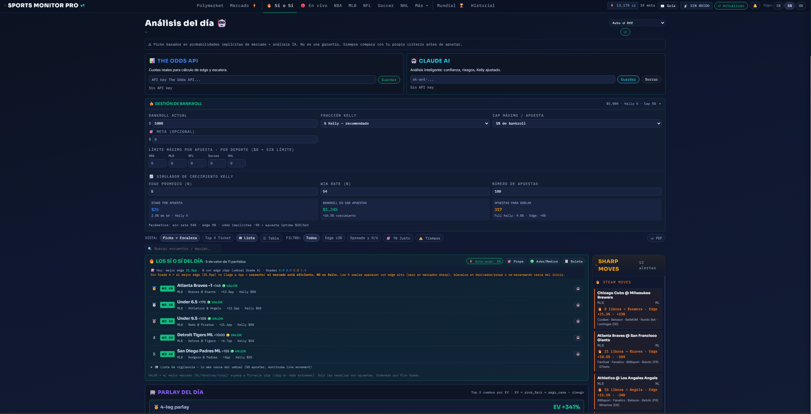
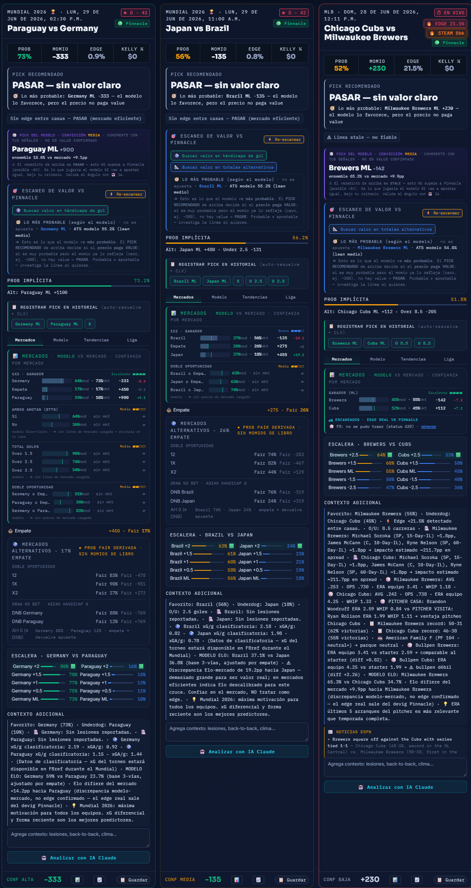
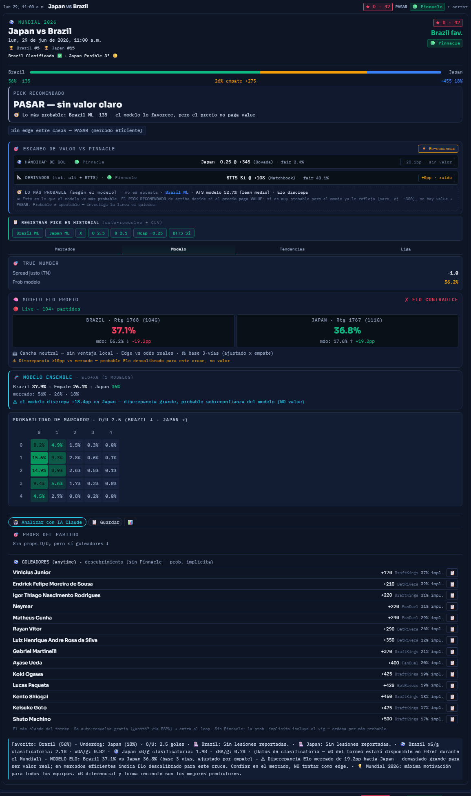
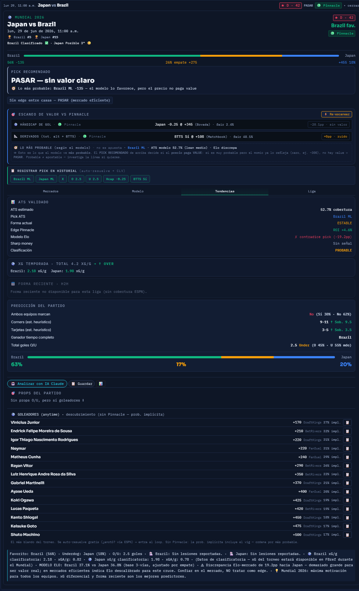
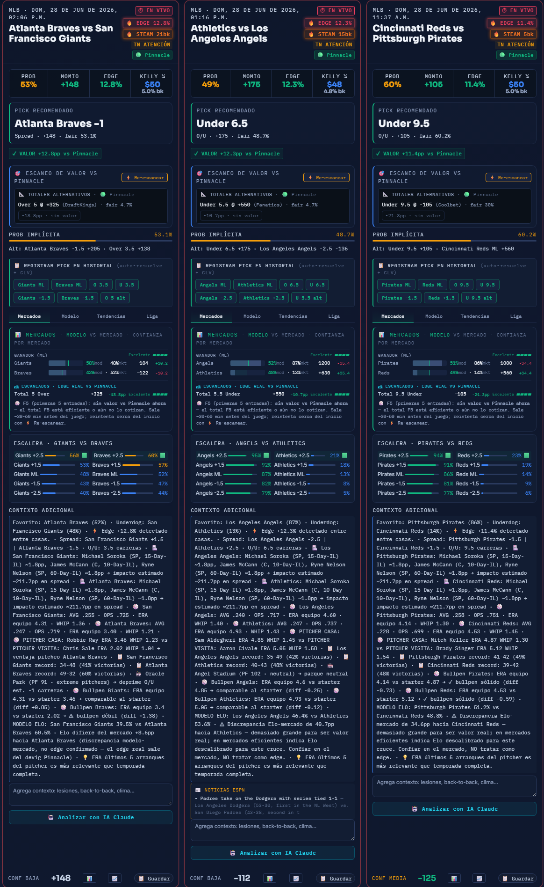
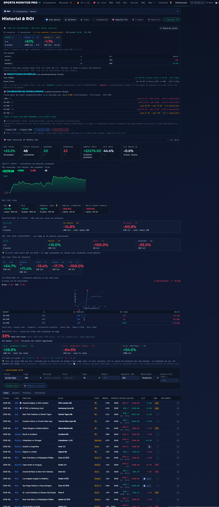
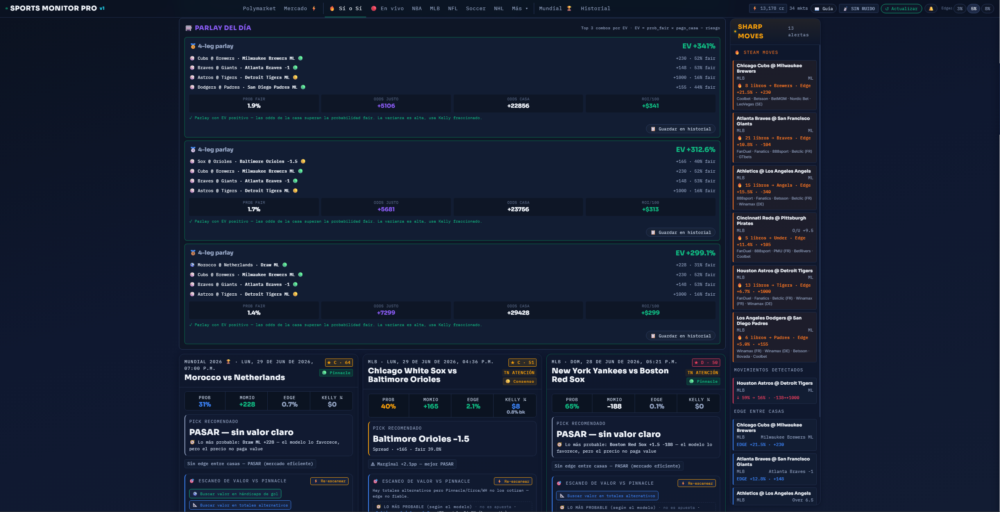

Motor cuantitativo que detecta ineficiencias de precio en mercados deportivos A quantitative engine that detects pricing inefficiencies in sports markets
Construye sus propias estimaciones de probabilidad para cada partido, le quita el margen ("vig") a las cuotas para recuperar la cuota justa, y la compara contra la casa más afilada del mundo (Pinnacle) para detectar dónde una casa blanda está mal valuada. Todo corre en el navegador, en un solo archivo HTML, sin servidor, sin npm y sin compilación. It builds its own probability estimates for each game, strips the bookmaker margin ("vig") to recover fair odds, and compares them against the sharpest book in the world (Pinnacle) to surface where a soft book is mispriced. Everything runs client-side in a single HTML file — no server, no npm, no compilation.
Los mercados deportivos son eficientes, pero no perfectos. Quería responder una pregunta cuantitativa difícil, de principio a fin:
Sports markets are efficient — but not perfect. I wanted to answer one hard quantitative question, end to end:
Eso exigió resolver varios problemas reales: construir modelos calibrados desde cero, quitar el margen de la casa correctamente, integrar media docena de APIs públicas inestables desde el navegador y —lo más difícil— validar el modelo con honestidad sin pagar por datos históricos de cuotas.
That required solving several real problems: building calibrated models from scratch, removing the bookmaker margin correctly, integrating half a dozen flaky public APIs from the browser, and — the hard part — validating the model honestly without paying for historical odds data.
En el fondo, es un proyecto de modelado predictivo + ingeniería de datos disfrazado de tablero de apuestas.
At its core, it's a predictive-modeling + data-engineering project disguised as a betting dashboard.
Cinco modelos construidos desde cero, calibrados para no sobre-dispersar.Five models built from scratch, calibrated to avoid over-dispersion.
Modelo Poisson de goles con ponderación por recencia, splits local/visita, ajuste por fuerza del rival y shrinkage por deporte.Poisson goal model with recency weighting, home/away splits, opponent-strength adjustment and per-sport shrinkage.
Sistema de rating con escalado por margen de victoria y decaimiento entre temporadas (con backfill histórico en Python).Rating system with margin-of-victory scaling and inter-season decay (with a Python historical backfill).
Combina Elo + Dixon-Coles + xG en una sola probabilidad calibrada.Blends Elo + Dixon-Coles + xG into a single calibrated probability.
Para deportes de muchos puntos (NBA/NFL) donde Poisson no aplica.For high-scoring sports (NBA/NFL) where Poisson doesn't fit.
De-vig no lineal (probit) de la moneyline a un spread implícito para detectar líneas mal valuadas.Non-linear (probit) de-vig of the moneyline into an implied spread to flag mispriced lines.
De-vig multiplicativo y de potencia, edge vs Pinnacle en puntos porcentuales, CLV y un Pick Grade (A/B/C/D) que fusiona todas las señales.Multiplicative & power de-vigging, edge vs Pinnacle in points, CLV, and a unified Pick Grade (A/B/C/D) fusing every signal.
La herramienta registra sus propios picks calificados y los resuelve después usando marcadores públicos gratuitos (ESPN) — construyendo un dataset privado de desempeño y reportando ROI por grade, sin pagar por una API de históricos.
The tool logs its own graded picks and resolves them later using free public box scores (ESPN) — building a private performance dataset and reporting ROI by grade, with no paid historical API.
API de Anthropic Claude con salida estructurada (JSON válido garantizado) y prompt caching para eficiencia de costo, como segunda opinión cualitativa en todos los mercados.Anthropic Claude API with structured outputs (guaranteed-valid JSON) and prompt caching for cost efficiency, giving a qualitative second opinion across all markets.
131 pruebas automáticas en el navegador (testing sin Node.js) + checks de integración. UI oscura responsive (Sora/Inter, barras modelo-vs-mercado, tabs por tarjeta).131 in-browser self-tests (testing without Node.js) + integration checks. Responsive dark UI (Sora/Inter, model-vs-market bars, per-card tabs).
Clic en cualquier imagen para verla en tamaño completo.Click any image to view it full size.







Siete fuentes integradas, con capa de fallback vía proxy CORS.Seven integrated sources, with a CORS-proxy fallback layer.
| FuenteSource | Auth | Para quéUsed for |
|---|---|---|
| The Odds API | API key | Cuotas, edge vs Pinnacle, propsOdds, edge vs Pinnacle, props |
| ESPN | ningunanone | Marcadores, lesiones, forma, standings, resolución gratis de resultadosScores, injuries, form, standings, free result resolution |
| MLB Stats API | ningunanone | Pitchers probables, ERA, box scoresProbable pitchers, ERA, box scores |
| Basketball-Reference | CORS proxy | Stats avanzados NBA (ORtg/DRtg/Pace)NBA advanced stats (ORtg/DRtg/Pace) |
| FBref | CORS proxy | xG de fútbolSoccer xG |
| OpenWeather / Open-Meteo | key opcionaloptional key | Impacto del clima en los totalesWeather impact on totals |
| Anthropic Claude | API key | Análisis cualitativoQualitative analysis |
La mayoría de los "modelos de apuestas" nunca se validan con honestidad. Este sí, y gratis:
Most "betting models" are never honestly validated. This one is, for free:
Una arquitectura deliberada de un solo archivo file://: sin herramientas de build, sin dependencias, máxima portabilidad.
A deliberate single-file file:// architecture: no build tools, no dependencies, maximum portability.
index.html ├── <style> → design system + responsive ├── HTML → tab structure └── <script> → ~13K líneas de JS ~90 secciones: motor de valor · modelos · fetchers · render · loop de validación · cliente LLM
Abre al instante vía file:// sin configuración, es trivial de respaldar y depurar, y corre donde haya un navegador. Un script en Python (elo_backfill.py) inicializa los ratings Elo históricos offline.
It opens instantly via file:// with no setup, is trivial to back up and debug, and runs anywhere a browser does. A Python helper (elo_backfill.py) bootstraps historical Elo ratings offline.
file://file:// constraints
Sin módulos ES y con CORS del navegador → resuelto con scripts clásicos + una capa de fallback con proxy CORS.
No ES modules and browser CORS → solved with classic scripts + a CORS-proxy fallback layer.
Detecté y corregí una sobre-dispersión del Dixon-Coles (un total de béisbol de 14.5 → ~9 carreras) con shrinkage y clamping por deporte.
Debugged and fixed a Dixon-Coles over-dispersion (a baseball total of 14.5 → ~9 runs) via per-sport shrinkage and clamping.
Construí un harness de 131 pruebas que corre en el navegador y se verifica de forma headless.
Built a 131-case self-test harness that runs in the browser and is verified headlessly.
Una regla estricta contra fabricar cualquier señal sin una fuente real; las estimaciones siempre se etiquetan como tales.
A strict rule against fabricating any signal without a real source; estimates are always labeled.
Si quieres saber más sobre Sports Monitor Pro o un proyecto de análisis de datos, contáctame. If you want to know more about Sports Monitor Pro or a data-analysis project, get in touch.
⚠️ Proyecto personal de investigación en modelado estadístico e ingeniería de datos. No coloca apuestas y no es asesoría financiera. ⚠️ Personal research project for statistical modeling and data engineering. It does not place bets and is not financial advice.